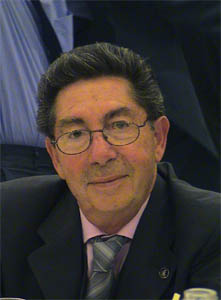

José González Serna
José González Serna  José González Serna
José González Serna 
 Haz clic aquí para detalles de la Familia de José con María del Carmen Martín Mateos
Haz clic aquí para detalles de la Familia de José con María del Carmen Martín Mateos
This page is within a frameset. View the entire genealogy report of González Serna families, or surname index of González Serna pedigrees or report summary of González Serna heritage from "Árbol Genealógico de Manolo y Amalia".
Gedcom Viewer.
© 2006 GenoPro Inc. All Rights Reserved.